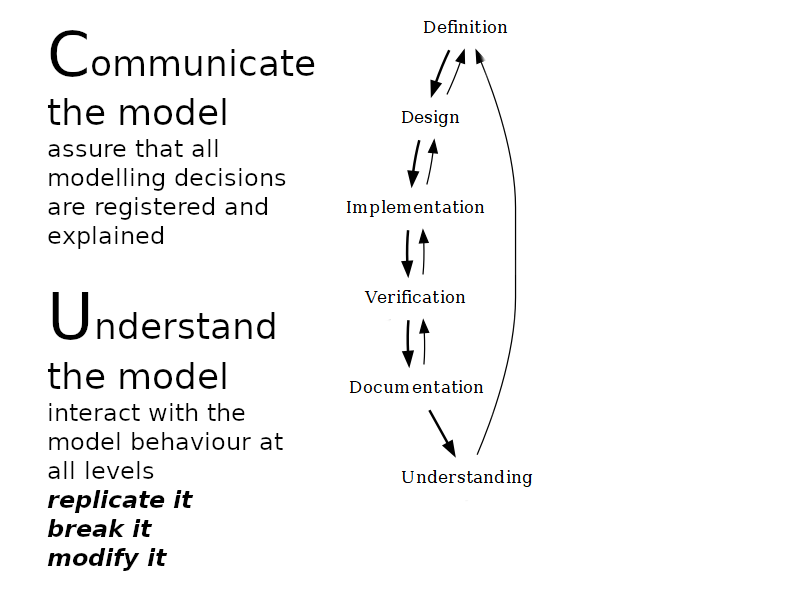
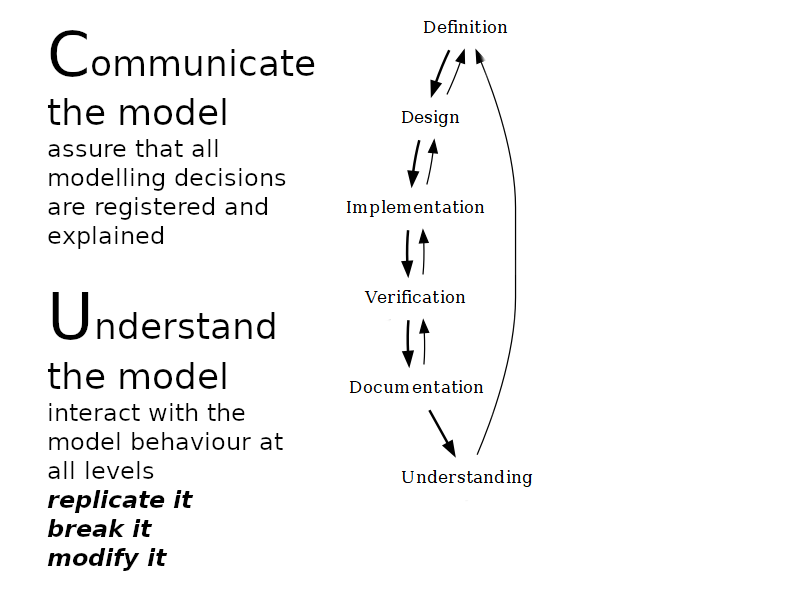
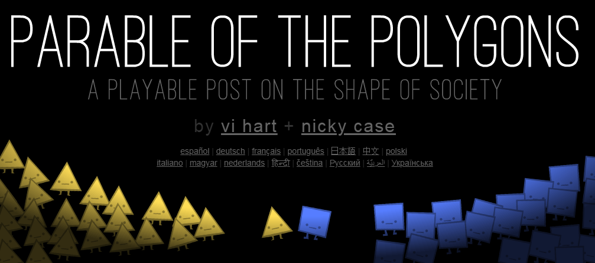
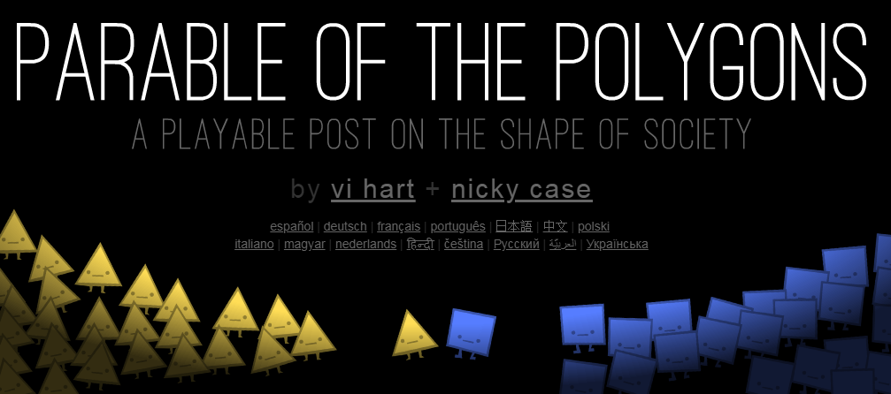

Simulación en arqueología
Andreas Angourakis | @AndrosSpicahttps://andros-spica.github.io/UB-Angourakis-2024/index.html?print-pdf (PDF)


- ¿Qué es simulación?
- Definición
- Lugar como modelado matemático
- Modelado basado en agentes
- Usos en arqueología
- Consideraciones metodológicas
- Dominios de aplicación
- Ejemplos (casos de estudio)
- Límites y expectativas
- Conclusión

2. Usos en arqueología
1.1. Definición
"Representar algo, fingiendo o imitando lo que es" (simular, RAE)
"a: the imitative representation of the functioning of one system or process by means of the functioning of another
a computer simulation of an industrial process
b: examination of a problem often not subject to direct experimentation by means of a simulating device"
(simulation, Merrian-Webster)
"A simulation is an imitative representation of a process or system that could exist in the real world.
In this broad sense, simulation can often be used interchangeably with model.
Sometimes a clear distinction between the two terms is made, in which simulations require the use of models;
the model represents the key characteristics or behaviors of the selected system or process,
whereas the simulation represents the evolution of the model over time.
Another way to distinguish between the terms is to define simulation as experimentation with the help of a model."
(Simulation, Wikipedia)


realidad modelo
simulación

1. ¿Qué es modelado basado en agentes?
1.2. Lugar como modelado matemático
Modelos, modelos matemáticos, modelos de simulación

Diagramas disponibles en https://github.com/Andros-Spica/modelling-simulation-graphs
Iconos por "The Noun Project", varios autores (thenounproject.com)

observaciones
modelo descriptivo
un modelo que retorna el output dado el input...
modelo explicativo
... y la definición de un mecanismo
Modelos, modelos matemáticos, modelos de simulación

Diagramas disponibles en https://github.com/Andros-Spica/modelling-simulation-graphs
Iconos por "The Noun Project", varios autores (thenounproject.com)
| Input | Modelo | Output | |
| Aprendizaje automático | conocido | aprendido después de la implementación |
conocido+ predecido después del entrenamiento |
| Simulación | conocido+ supuesto |
conocido antes de la implementación |
aprendido después de iteraciones +buscado |
pasos de modelización


 


1. ¿Qué es modelado basado en agentes?
1.3. Modelado basado en agentes
Bajo el prisma de las ciencias de la complejidad
- Sistemas complejos (video)
- cantidad y diversidad de relaciones causales
- no-lineariedad, dependencia de la trayectoria, autoorganización and autosimilitud
-
Marcos unificadores:
- teóricos (e.g., ciencia social generativa, sistemas socioecológicos)
- metodológicos (e.g., SIG, análisis de redes modelado basado en agentes)
George (talk)Conways_game_of_life_breeder.png: Hyperdeath [CC BY-SA 3.0 (https://creativecommons.org/licenses/by-sa/3.0)], via Wikimedia Commons
Modelado basado en agentes
(MBA o ABM)
- dinámicas
- formalización
- comportamientos
- población
- "bottom-up"
- estocasticidad


to solve the Stable Marriage Problem
 

Modelo de segregación de Schelling
2. Usos en arqueología
2.1. Consideraciones metodológicas
ABM en la metodología arqueológica


Diagramas disponibles en https://github.com/Andros-Spica/modelling-simulation-graphs
Icon assets from "The Noun Project" (thenounproject.com)
2. Usos en arqueología
2.2. Dominios de aplicación
Dinámica fisicoquímica
- Producción de artefactos: cadena operativa (chaîne opératóire), autoría y estilo, transformaciones materiales durante la fabricación (Sorensen y Scherjon 2018), uso y deposición (Gravel-Miguel et al. 2021)
- Formación de yacimientos: distribución de artefactos y estructuras (Gravel-Miguel et al. 2021)), preservación, formación de estratos y tafonomía (Davies et al. 2016), sesgo de muestra
Dinámica ecológica
- Clima: estacionalidad (Angourakis et al. 2022), variaciones regionales, cambio climático (Bocquet-Appel et al. 2014)
- Suelos: erosión y acumulación de sedimentos (Kabora et al. 2020; Robinson et al. 2018; Ullah et al. 2019)
- Hidrología: disponibilidad de agua, escorrentía, irrigación (Altaweel y Watanabe 2012)
- Plantas: domesticación de plantas (Angourakis et al. 2022); dinámica de cultivos (Angourakis et al. 2022; Baum et al. 2016); estimación de biomasa o productividad (Boogers y Daems 2022; Christiansen y Altaweel 2006; Joyce 2019; Robinson et al. 2018); deforestación e incendios forestales (Boogers y Daems 2022; Snitker 2021)
- Animales: dinámica de poblaciones bajo influencia humana (Morrison y Allen 2017); dinámica de poblaciones de animales domésticos (Günther et al. 2021); comportamiento de rebaño, forrajeo y trashumancia (Günther et al. 2021; Rogers 2013)
Ver referencias en Angourakis 2023 Vegeta
Dinámica antropológica I
- Individuos: dinámica peatonal (Lake 2001); forrajeo (Brantingham 2006; Oestmo et al. 2016); parentesco (Rogers 2013); apareamiento, matrimonio y reproducción (Verhagen 2019); salud y mortalidad (Verhagen 2019); cognición (memoria, racionalidad y aprendizaje) (Mokom 2015; Premo y Tostevin 2016; Sousa et al. 2019); cooperación y competencia entre individuos (Graham 2009; Sousa et al. 2019; White 2013); aprendizaje social y emergencia de normas (Gower-Winter 2022; Mokom 2015)
- Grupos: organización de hogares y microeconomía (Christiansen y Altaweel 2006; Joyce 2019); emergencia de alianzas y organizaciones (Cioffi-Revilla et al. 2015; White 2013); cooperación y competencia entre grupos (Angourakis et al. 2014, 2015, 2017; Cioffi-Revilla et al. 2015; Rogers 2013); movilidad de grupos (Rogers 2013; Santos et al. 2015); logística y táctica militar (Rubio-Campillo et al. 2014, 2015; Verhagen 2019)
Ver referencias en Angourakis 2023 Vegeta
Dinámica antropológica II
- Asentamientos: dinámica demográfica (crecimiento natural y migración) (Verhagen 2019); explotación de recursos (Boogers y Daems 2022); comercio (Carrignon et al. 2020; Chliaoutakis y Chalkiadakis 2020; Lawall y Graham 2018; Ortega et al. 2014; Sakahira et al. 2020); evolución cultural (Carrignon et al. 2020; Gower-Winter 2022; Lake y Crema 2012; Mokom 2015; Sakahira et al. 2020); patrones de asentamiento (Altaweel 2015; Chliaoutakis y Chalkiadakis 2016); uso del suelo (Angourakis et al. 2014, 2017; Boogers y Daems 2022; Joyce 2019; Robinson et al. 2018; Rogers 2013; Snitker 2021; Ullah et al. 2019); politogénesis (Cioffi-Revilla et al. 2015; Rogers 2013; Turchin et al. 2013); colapso o abandonamiento catastrófico (Kohler y Varien 2012; McAnany et al. 2015)
- A escalas regionales hasta globales: cooperación y competencia entre estados territoriales (Turchin et al. 2013); rutas comerciales (Chliaoutakis y Chalkiadakis 2020; Lawall y Graham 2018; Ortega et al. 2014); dispersión humana (Callegari et al. 2013) y difusiones genéticas y culturales (Bocquet-Appel et al. 2014; Kovacevic et al. 2015; Mokom 2015)
Ver referencias en Angourakis 2023 Vegeta
2. Usos en arqueología
2.3. Ejemplos
Artificial Anasazi
Janssen, M. A. (2009). Understanding Artificial Anasazi. Journal of Artificial Societies and Social Simulation, 12(4). http://jasss.soc.surrey.ac.uk/12/4/13.html

HOMINIDS


MedLanD

HouseholdsWorld
MayaSim


Indus Village model


Angourakis et al. 2022, Quaternary | repositorio: https://github.com/Andros-Spica/indus-village-model
Carrignon, S., Brughmans, T., & Romanowska, I. (2020). Tableware trade in the Roman East: Exploring cultural and economic transmission with agent-based modelling and approximate Bayesian computation. PLOS ONE, 15(11), e0240414. 10.1371/journal.pone.0240414
- Comercio de vajillas del Mediterráneo oriental (épocas helenística y romana)
- 8730 fragmentos, 5 tipos, 178 sitios (presencia/ausencia por tipo-sitio)
- Un problema de evolución cultural
- Simulación de algoritmos de transmisión cultural (tres hipótesis) junto con un modelo de economía de mercado, produciendo distribuciones espaciales de rasgos culturales de los comerciantes de cada asentamiento
- Exploración estocástica del espacio de parámetros para cada algoritmo, evaluado a la luz de datos empíricos, mediante Computación Bayesiana Aproximada (ABC) + Monte Carlo de Población (ABCPMC)
Uso combinado de ABM y aprendizaje automático
See also:
Carrignon, S., Bentley, R. A., & Ruck, D. (2019). Modelling rapid online cultural transmission:
Evaluating neutral models on Twitter data with approximate Bayesian computation.
Palgrave Communications, 5(1), Article 1. https://doi.org/10.1057/s41599-019-0295-9
2. Usos en arqueología
2.4. Recursos de aprendizaje
Portal
- Tutoriales
- Curso en vídeo
- Referencia a otros materiales
Manual
Romanowska, Iza, Colin D. Wren, and Stefani A. Crabtree. 2021. Agent-Based Modeling for Archaeology. Electronic. SFI Press. https://doi.org/10.37911/9781947864382
- Introducción teórica y práctica
- No presumpone conocimientos previos de programación
- Ejemplos y ejercicios en NetLogo

Tutorial online
Angourakis, A. (2022). Andros-Spica/ABM-tutorial-koeln-2022: Archaeological ABM at Cologne: from concept to application [Computer software]. Zenodo. https://doi.org/10.5281/zenodo.6668143 https://github.com/Andros-Spica/ABM-tutorial-koeln-2022/
- De la creación de prototipos al uso de datos arqueológicos y ambientales
- Desarrollo progresivo de código en NetLogo


3. Límites y expectativas
Metodología
- Disambigüación
- Consolidación de modelos compartidos
- Laboratorio virtual
- Interdisciplinariedad
http://jasss.soc.surrey.ac.uk/11/4/12.html
Teoría
- Emergencia social y systemas socioecológicos
- Resiliencia, adaptación, cambio y colapso
- Asentamiento y mobilidad
- Comportamiento y cognición
Grand challenges for archaeology. Proceedings of the National Academy of Sciences of the United States of America, 111(3), 879–880.
https://doi.org/10.1073/pnas.1324000111

Adecuación a la perspectiva arqueológica
- Procesos sociales asociados a la materialidad
- Cualquier escala espacio y tiempo
- Colección y estandarización de datos
- Construcción de teoría y generación de hipótesis
Rogers, J. D., & Cegielski, W. H. (2017). Opinion: Building a better past with the help of agent-based modeling. Proceedings of the National Academy of Sciences of the United States of America, 114(49), 12841–12844. https://doi.org/10.1073/pnas.1718277114
Cegielski, W. H., & Rogers, J. D. (2016). Rethinking the role of Agent-Based Modeling in archaeology. Journal of Anthropological Archaeology, 41, 283–298. https://doi.org/10.1016/J.JAA.2016.01.009
Angourakis, A. (2023). El lugar de la simulación social en arqueología. Vegueta: Anuario de la Facultad de Geografía e Historia, 23(1), 15–55. https://doi.org/10.51349/veg.2023.1.02
Límites
- No es una solución mágica
- Largo camino para estándar
- Díficil aprendizaje
- Sesgos
- Validación, documentación y compreensión subdesarrolladas
Futuro?
- Diseño de videojuegos
(e.g. Project Highrise)

- Aprendizaje profundo (e.g. robotics)
4. Conclusión


Imágenes creadas por Leonardo.AI (Diffusion XL) sobre
"computer simulation in archaeology" and
"computer simulation and mathematical modelling in.
- Mecanismo/explicación es la piedra angular de los modelos de simulación
- ABM + arqueología:
muchas vías disponibles
y aún por explorar - Los sistemas socioecológicos del pasado exigen un modelado a largo plazo (de tiempo profundo, complejo, multidisciplinario)